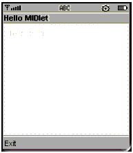

|
|
This chapter covers the basics of writing a MIDlet. It contains the sections:
The Hello MIDlet example is shown in the following figure. The MIDlet has a single screen that has Hello MIDlet as its title. The screen is a text box that accepts edits and initially displays the string “Test string.” It has a single abstract command with the label Exit.

The code for the Hello MIDlet is in the midpInstallDir\src\example directory, where midpInstallDir is the directory that holds your installation of the MIDP Reference Implementation. The code is reproduced in Appendix A, "Code for the Hello MIDlet.”
MIDlets must extend the MIDlet class. They often also implement the CommandListener interface as a matter of convenience. The CommandListener interface contains the method that the MIDP implementation calls to notify your application that the user has selected an abstract command.
The MIDlet class is in the package javax.microedition.midlet. The CommandListener interface is in the javax.microedition.lcdui package, as are the structured screens, unstructured screens, and abstract commands.
Initially the file for the Hello World MIDlet could look like this:
import javax.microedition.midlet.*; import javax.microedition.lcdui.*; /** * An example MIDlet with simple "Hello" text and an Exit command. */ public class HelloMIDlet extends MIDlet implements CommandListener { // MIDlet will be defined here. }
A MIDlet constructor should perform any setup that should be done only once in the lifetime of the MIDlet. Typically the constructor should:
CommandListener interface; for the example it’s the HelloMIDlet class.
The constructor can also set the MIDlet’s display to the initial screen of the MIDlet. This task could also be done in the startApp method; see "Creating the Life Cycle Methods" for more information.
The Hello MIDlet uses a structured screen called a text box, which the MIDlet stores in an instance variable named textBox. Because the text box does not need to store any additional data or implement any additional functionality, it can be an instance of the TextBox class. (If it did require additional functionality, such as the ability to query a database to get its initial string, you would create a subclass of TextBox to instantiate.)
You can create text boxes with a title, initial text, the maximum number of characters the text box can hold, and a value that represents any constraints and modifiers. A constraint is a request that the MIDP implementation uses to limit user input. A modifier is a request that the MIDP implementation uses to change the behavior of text entry and display.
The Hello MIDlet’s text box has the title “Hello MIDlet” and the initial text “Test string.” It can hold up to 256 characters. It has the constraint TextField.ANY, which means the text box may contain any text; for example, it is not limited to holding only numbers. It also has the modifier TextField.UNEDITABLE, which means that the user is not permitted to change what is in the text box.
The Hello MIDlet also has a single abstract command that enables users to quit the application. When you create an abstract command you need three pieces of information:
For example, some devices have a key typically used to return to a previous state. The MIDP implementation might try to always assign a command of type Command.BACK to this key.
The Hello MIDlet’s command is associated with the text box. The command in the Hello MIDlet has the label Quit, type Command.EXIT, and priority one.
CODE EXAMPLE 2 shows the constructor for the Hello MIDlet.
/** * Constructs the HelloMIDlet, its screen, and * its command. It associates the screen and command, * and caches the MIDlet’s display. */ public HelloMIDlet() { // Create the abstract command exitCommand = new Command("Exit", Command.EXIT, 1); // Create the screen and give it a command and a listener textBox = new TextBox("Hello MIDlet", "Test string", 256, TextField.ANY | TextField.UNEDITABLE); textBox.addCommand(exitCommand); textBox.setCommandListener(this); // Set the MIDlet's display to its initial screen display = Display.getDisplay(this); display.setCurrent(textBox); }
The variables that it sets, textBox, exitCommand, and display, are declared prior to defining the class. The following code fragment shows the fields in the Hello MIDlet:
// Fields for the screens, commands, and display of this MIDlet private TextBox textBox; private Command exitCommand; private Display display;
The MIDP implementation notifies your application every time the user carries out an action (an abstract command) associated with a screen. It does this by calling the commandAction method of the CommandListener interface on the screen’s listener.
The commandAction method takes as arguments the action that the user has chosen and the screen that was being displayed. (You need to know the screen because you can associate the same abstract command with multiple screens.)
In MIDlets set up like the example, with one class listening for commands, the commandAction method typically contains an if statement. For example, in natural language, “If the user chooses Quit, exit the MIDlet. If the user chooses Go Back, then if the screen is ScreenB, set the display to ScreenA, if the screen is ScreenC, set the display to ScreenB, and so on.” The following code example shows the commandAction method for the Hello MIDlet:
/* * Responds to the user’s selection of abstract commands. * This MIDlet has only an exit command, this method responds * by cleaning up and notifying the system that the MIDlet * has been destroyed. * * @param command the command the user has chosen * @param screen the displayable shown when the user chose the * command */ public void commandAction(Command command, Displayable screen) { if (command == exitCommand) { // Always make these two calls when exiting a MIDlet. destroyApp(false); notifyDestroyed(); } }
There are three life cycle methods in the MIDlet class. The methods correspond to the states in the MIDlet life cycle discussed in Section "MIDlet Life Cycle" . The methods are:
startApp — Notifies the MIDlet that it has just been moved from the Paused state to the Active state. If your MIDlet requires any shared resources when it runs, have this method aquire them. It can also set the initial screen if the MIDlet’s constructor hasn’t done that. It should not set subsequent screens.pauseApp —Notifies the MIDlet that it has just been moved from the Active state to the Paused state. If the MIDlet is holding shared resources, this method should release them. (The startApp method should reaquire them when the MIDlet becomes active again.) If the MIDlet should restart with a particular screen, this method should set it by calling the setCurrent method.destroyApp — Notifies the MIDlet that it should prepare to enter the Destroyed state by releasing its resources and saving any persistent state. Unlike the other life cycle methods, this method takes an argument indicating whether the MIDlet must be destroyed. If the argument is false (destruction is requested but not required), you can have the MIDlet request to be destroyed at a later time by having the method throw a MIDletStateChangeException. The MIDP system could, in response, not change the state of the MIDlet and call the destroy method again later.
The life cycle methods are declared abstract; you must implement them in your MIDlet subclass in order to instantiate your MIDlet. The following code sample shows the life cycle methods of the Hello MIDlet. Because the MIDlet does not use shared resources, the methods are empty.
/** * Starts the MIDlet; this method does nothing because * the MIDlet does not require any shared resources. */ public void startApp() { } /** * Pauses the MIDlet; this method does nothing because * there are no background activities or shared resources * to close. */ public void pauseApp() { } /** * Destroys the MIDlet; this method does nothing because * there is nothing to cleanup that is not handled by the * garbage collector. * * @param unconditional Whether the MIDlet must be destroyed. * If true, the MIDlet must cleanup and release all resources. * If false the MIDlet may throw a MIDletStateChangeException to * indicate it does not want to be destroyed at this time. */ public void destroyApp(boolean unconditional) { }
The MIDP 2.0 security model protects security-sensitive APIs. The APIs in the following table are security sensitive. If you use them in your MIDlet, you must make that known when you package it into a MIDlet suite. (See "Creating a JAR File" for instructions.)
Not all APIs are security sensitive. The following table shows the APIs that all MIDlets can freely use:
|
|
Creating MIDlet Suites MIDP Reference Implementation, Version 2.0 FCS |
Copyright © 2002 Sun Microsystems, Inc. All rights reserved.